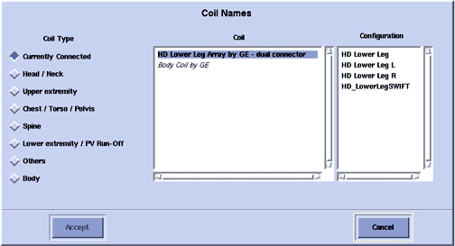

Operating Documentation
Direction 5440000, Rev# 5
Signa HDxt Service Methods
Module Version 5.0, Version Date 9/10/09
Operating Documentation |
| Required Persons | Procedure |
| 1 | 30 minutes |
The following tips can be used to troubleshoot common problems with the 3.0T HD 8 Channel High Resolution Brain Array by Invivo (M3335LL).
Digital Volt Meter
The following coil configuration names must be installed to run this tool with 15.x and earlier:
HDx 8HRBrain
HDx 8HRBrainServ
Problem:
Unable to pre-scan or scanning, but receiving no signal.
Possible Solution:
Verify the green light above Port A is illuminated. This indicates the coil is properly plugged into the system.
Verify the system correctly detected the coil by checking in Currently Connected in the GUI shown in the example in Illustration 1.
Illustration 1: Currently Connected Coils Window on Scan Screen

Verify that the landmark is correct and the cradle did not unlatch.
Verify that the scan locations and any Field of View (FOV) offsets are correct.
Perform a continuity check on the external cable described in Section 5.4.2. The continuity check must be performed by a GE-authorized Service Engineer.
Verify that the coil is positioned with the cable exiting towards the bore and that the system and coil polarity match.
If still unable to receive a signal, try to scan (transmit and receive) with the body coil. For this test, be sure to remove the imaging coil from the magnet bore before scanning with the body coil.
If still not receiving a signal, the problem probably lies with the MR system.
If the scan completes successfully, there may be a problem with the Invivo coil. Contact GE for further assistance. If unable to scan with the substitute coil, there may be a system problem related to this particular coil type.
Problem:
Poor IQ, shaded images, or MCQA fails.
Possible Solution:
Perform a continuity check on the external cable described in Step . The continuity check must be performed by a GE authorized Service Engineer.
Verify that there are no loops in the cables.
Verify that there are no metal or ferromagnetic objects close to the coil, patient or magnet (i.e., safety pin, hair pin).
Verify that the coil is properly positioned.
Verify that the center frequency is within the frequency adjustment range for the system.
Verify that the R1, R2 and TG values from the pre-scan are within normally expected ranges.
If not already done:
Perform a system Quality Assurance phantom test.
If the values obtained do not fall within normal operating parameters, investigate further by performing a phantom scan with the body coil. For this test, be sure to remove the imaging coil from the magnet bore before scanning with the body coil. If still having the same problems, there is probably an MR system problem.
If the body coil scan is satisfactory, acquire a scan using another coil of the exact same type (receive-only, phased array, or transmit/receive, whichever applies) and the same system coil selection. If the image quality is visibly improved, there may be a problem with the Invivo coil.
Contact GE for further assistance. If the image quality still suffers, there may be a system problem related to imaging with this type of coil.
Problem:
There is a black line or signal void on the image.
Possible Solution:
Verify that there is no metal present in the area being scanned in or on the patient.
Problem:
Some or all of the images appear shaded or exhibit uneven signal or banding.
Possible Solution:
Confirm that no metallic objects are located nearby, outside the FOV. This is especially important on images utilizing Fat Saturation.
If Fat Saturation is being used, verify that the Center Frequency Adjustment (CFA) fine adjustment was optimized.
Problem:
System will not recognize the coil, or reports MC bias errors with the coil attached.
Possible Solution:
Perform the cable continuity check as follows:
The center pins of the System Connector receive coaxial connectors are extremely fragile. Do not attempt to make any measurements at these center pins.
With the coil cable disconnected, use a multimeter to assure an open circuit condition exists between the designated pin and GND (shown in Illustration 2) for each Signal Channel in .
Illustration 2: Coil Cable Connector

Table 1:
| Signal Channel | Coil Cable Connector | Connection |
| MC-1 | Center A7 | GND |
| MC-2 | Center A6 | GND |
| MC-3 | Center A5 | GND |
| MC-4 | Center A4 | GND |
| MC-5 | Center A3 | GND |
| MC-6 | Center A2 | GND |
| MC-7 | Pin 2 | GND |
| MC-8 | Center A1 | GND |
| GND | NOTE: All outer [A] shells and Pins 1 and 3 are common to GND. | |
If one or more of the readings indicate a short, replace the cable. If all of the above readings indicate an open circuit condition, proceed to Section 5.4.2.
With the coil cable disconnected, use a multimeter to determine continuity between the designated pins for each Control Channel in Table 2. Verify that the control pins are not shorted to GND.
Table 2: External Cable Expected Readings B
| Control Channel | Coil Cable Connector | System Connector |
| MC bias 1 | Pin 17 | J1 |
| MC bias 2 | Pin 16 | J2 |
| MC bias 3 | Pin 15 | J3 |
| MC bias 4 | Pin 14 | J4 |
| MC bias 5 | Pin 4 | J5 |
| MC bias 6 | Pin 5 | J6 |
| MC bias 7 | Pin 6 | J7 |
| MC bias 8 | Pin 7 | J8 |
| GND | NOTE: All outer [A] shells and Pins 1 and 3 are common to GND. | K1 - K8, M6 |
If one or more of the readings are >3 ohms, replace the coil cable. If all readings are <3 ohms, proceed to Section 5.4.3.
With the coil cable connected to the coil, use a multimeter to measure the diode drop across the coil connector pins as detailed in Table 3. Use Illustration 3 for pin identification while performing this procedure.
Table 3: Pin Diode Expected Readings
| System Connector | Reading | |||
| Positive Lead | Negative Lead | |||
| J1 | GND | [K1] | 1.7 | |
| GND | [K1] | J1 | Open | |
| J2 | GND | [K2] | 1.7 | |
| GND | [K2] | J2 | Open | |
| J3 | GND | [K3] | 1.7 | |
| GND | [K3] | J3 | Open | |
| J4 | GND | [K4] | 1.7 | |
| GND | [K4] | J4 | Open | |
| J5 | GND | [K5] | 1.7 | |
| GND | [K5] | J5 | Open | |
| J6 | GND | [K6] | 1.7 | |
| GND | [K6] | J6 | Open | |
| J7 | GND | [K7] | 1.7 | |
| GND | [K7] | J7 | Open | |
| J8 | GND | [K8] | 1.7 | |
| GND | [K8] | J8 | Open | |
Illustration 3: System Connector

If one or more of the readings indicate a short, replace the coil. If all of the above readings are correct, redo Coil Imaging Performance Verification. If the problem still exists, replace the 1.5T HD 8 Channel High Resolution Brain Array Coil.
Inspect the coil for visible signs of wear. If the coil housings do not seat with each other or if the latch mechanism will not work properly, contact GE Service.